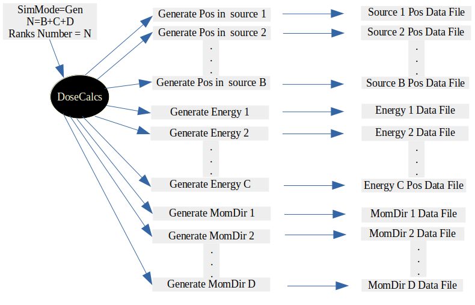

DoseCalcs-Core Simulations
Simulation Units
Three computation modes are available for the DoseCalcs execution scenario: sequential (SEQ), multi-threading (MT), and Message Passing Interface (MPI). Only for the (SEQ) and (MT) scenarios are three run modes available: data generation mode (Gen), calculation mode (B), and graphical visualization mode (G). The simulation requires five data types after the messenger classes have initialized the commands parameters. These data types are utilized in the five simulation steps of material and geometry construction, physics setup, source defining, simulation run and scoring, and results analysis. Each simulation step is carried out in accordance with the given commands.
The [macros] file, which contains all input commands to construct geometry, physics, source, and define parameters of run, score, and analysis, is the first of two files that may be considered as principal code inputs of DoseCalcs [simulate] executable. Second, if the user imports geometry from a file format, the geometry file (GDML, TEXT or STL). [Simulate] as a result, produces two types of files: absorbed energy data files, which contain the calculation result produced from each thread or rank (i.e. [AE@for@Rank@0@Thread@0@alpha@Liver@0.2]); the [ResultsData] file, which contains the result tables for each defined source parameter and each quantity to score, can alternatively be generated using [merge].
The input files for the [merge] executable are [macros] and absorbed energy files, with [ResultsData] being the output file. The [analysis] executable uses [macros] and [ResultsData] as input files to generate graphs, histograms, and Latex tables containing results and simulation geometry data.
Note that the files paths specified in the [macros] file or DoseCalcs execution command should point to the DoseCalcs build directory or be set to the absolute file path.
Build a Simple Example
To use the DoseCalcs application to simulate an dosimetry problem, two user files must be used as input data: the [macros] file and the geometry description file (or files if needed). The [macros] file includes commands for setting the required parameters for each simulation unit, including geometry (materials and volumes and/or geometry file), physics, source, run and score, and analysis. Each of these categories has its own set of commands.
[macros] file
The [macros] file is a Geant4 macro syntax-based ASCII file. The code loads this file to setup the simulation by selecting parameters from commands in it, avoiding the need to recompile the source code if the simulation changes.
Macros file example
####################################################### Materials ########################
/MaterialData/createElement 1 1.008 Hydrogen
/MaterialData/createElement 8 16 Oxygen
/MaterialData/createMaterial water 0 2 1. g/cm3 numb
/MaterialData/addElements Hydrogen 2 Oxygen 1
/MaterialData/setNistMaterialNameAndID G4_AIR 1
####################################################### Geometry ##########################
/GeometryData/createWorld Phantom.gdml
/GeometryData/createVolume Brain.c++ Head 0 0 8.25 0 0 0 cm degree
/GeometryData/createVolume Thyroid.geom Head 0 -3.91 -5.925 0 0 180 cm degree
/GeometryData/createSolid Ellipsoid SpleenSol 3.2 2.3 5.7 cm
/GeometryData/createVolume Spleen SpleenSol SoftTissue Trunk 10.79 2.94 1.8 0 0 0 cm degree
/GeometryData/createVolume Testes.stl SoftTissue MaleGenitalia 0 3 0 90 0 0 cm degree
####################################################### Physics ##########################
/PhysicsData/setPhysicsData EMS3
/PhysicsData/setCutsData 1. 1. mm keV
/PhysicsData/generateCrossSectionFor gamma MeV 0.01 0.015 0.02 0.03 0.05 0.1 0.2 0.5 1
####################################################### Source ###########################
/SourceData/setEventsParticleNameData gamma
/SourceData/setEventsInitialPosData cm Volume Thyroid 2. 2.1 2.2 Liver 15. 8. 8. Kidneys 16.1 2. 5.
/SourceData/setEventsInitialEneData MeV Mono 0.01 0.02 0.015 0.03 0.05 0.1 0.2 0.5 1
/SourceData/setEventsInitialMomDirData degree Isotropic
/SourceData/setSourceGenerationData read yes yes yes
####################################################### Run and Score ####################
/RunAndScoreData/setVolumesToScore source Liver Thyroid Testes target all
/RunAndScoreData/setQuantitiesToScore SAF
/RunAndScoreData/setSimNumOnRanks m
/RunAndScoreData/setNumberOfThreads 3
####################################################### Analysis #########################
/AnalysisData/generateSelfCrossGraphs Reference_Result Self_Cross ORNL Results/References/StylizedORNL1987SAFData.txt ICRP Results/References/VoxelizedMaleICRPRefData.txt
/AnalysisData/generateRelativeErrGraph RD
/AnalysisData/generateRelativeSDevGraph
/AnalysisData/generateVariableRegionGraph Mass
/AnalysisData/generateEventsDataHisto
/AnalysisData/setGraphsParameters yes no yes yes RightTop 0.15 0.23 yes .pdf
Geometry Input Methods
Each geometry method uses commands andor a specific geometry file, the geometry files that can be used by DoseCalcs:
C++ method : Construct volumes by Geant4 standard solids and materials using either simple DoseCalcs commands or C++ code.
GDML method : Construct volumes by reading .gdml file format, which contains all geometry description data, where materials, solids, logical and physical volumes parameters are given in tags format.
TEXT method : Construct volumes by reading .geom file format, which contains all geometry description data, where materials, solids, logical and physical volumes parameters are given in TEXT format.
STL method : Construct solids by reading .stl file format. Each solid is described by an STL file, adding the materials given in [macros] file to construct geometry volume.
The simulation geometry is constructed in this example using all available geometrical methods, with the most of of phantom volumes imported from GDML format file at path Phantom.gdml, brain volume created by standard Geant4 solids using C++ code added to block of G4TCPPGeometryFormat::ConstructLogicalVolumes(), thyroid volume from TEXT format file at path Thyroid.geom, spleen volume created by standard Geant4 solids by commands, and testes volume imported from STL format file.
Voxel IDs Geometry File : Contains IDs, each ID represents a specific material that fill the correspondent voxel.
DICOM Files : Each file contains data for slice (that represents either density or activity of the pixels in slice),
Tetrahedral data Files : .node file contains data for vertex, and .ele file contains data for tertrahedrons material and points,
Execution
Execution Command
Of course, installing Geant4 is required before developing DoseCalcs code, and it is recommended that Geant4 be created for multi-threading computing mode. After that, to execute DoseCalcs, the user must specify three options when using a command line processing interface: [Run Mode], [macros file], and [Events Number Per Thread].
$ ./simulate [Run Mode] [macros file] [Events Number Per Thread]
[macros file] : inputs commands (macros) file
[Events Number Per Thread] : All CPU cores are considered one thread for sequential execution. In Multi-Threaded or MPI computation modes, each thread or rank simulates this number on its own thread or rank CPU core.
Computation Modes
Sequential Execution Command
$ ./simulate B inp.mac 100000
Total number of events in simulation is 100000
Multi-threaded(MT) Execution Command
$ ./simulate B inp.mac 100000
100000 Events per Thread. The total number of events in the simulation will be 100000*ThreadNumber. ThreadNumber is set by command /RunAndScoreData/setNumberOfThreads
This mode is used when Geant4 is built in multi-threading.
MPI Execution Command
In MPI computation mode, the mpiexec or mpirun command should be set firstly as given in the following command:
$ /home/../mpirun -np [Rank Number] ./simulate B inp.mac 100000
[Rank Number] : The number of parallel simulations on the cluster, each running on a cluster unit (i.e core). For each simulation on a rank, DoseCalcs can use different source events data. This computation mode is enableb when the DoseCalcs is built with WITH_G4MPI_USE=ON
100000 Events per Rank. The total number of events in the simulation will be 100000*[Rank Number].
Run Modes
One of the [Run Modes] is B(batch), G(Graphical), or Gen(Generation). The Graphical mode is used to visualize(v) the geometry built by DoseCalcs and to test the events initial positions using the command /TestEventsInitialPositions. The box dimensions may also be shown by using the command /ShowSourceBox in the macros file. The graphical mode can only be utilized in sequential and multi-threading computation modes, as previously stated. The MPI computation mode, on the other hand, is only for Batch and Generation Run Modes. The Batch run mode is for simulation and scoring, whereas the Gen run mode is for generating event data including initial positions, energies, and momentum directions.
[Run Mode] : can be : B (Batch “default if we don’t set [Run Mode]), G (Graphical), T (Terminal) or Gen (Generation).
G Run Mode
In Sequential mode (DoseCalcs built with -DWITH_G4MPI_USE set to OFF), G mode is only utilized for geometry visualization, therefore we may use the commands /SourceData/TestEventsInitialPositions and /SourceData/ShowSourceBox.
$ ./simulate G [macros file] [.]
[.] : can be : v or an empty value means view geometry using the Qt interface using the OGL driver; d means download the geometry image in PS format using the DAWNFILE driver. Instead of using the v or d values, the user can use his own Geant4 visualization instructions by setting the visualization macros file path. The user should provide xy, xz, or yz for d value; the default plane when d value is specified is xy plane.
The DAWNFILE executable [dawn] that Geant4 uses to generate a high-quality picture can be obtained at https://twiki.cern.ch/twiki/bin/view/CLIC/DawnVisualization; Follow the installation instructions on this page; before executing graphical run mode (:ref:’GRunModeCommand’), in the terminal, type:
$ export G4DAWNFILE_VIEWER="dawn -d"
Gen Run Mode
Gen mode is only used to generate event data, which is then used in the simulation with the multi-threading and MPI modes. A set of /SourceData/ commands must be used to define the data to be generated in the [macros] file.
- In Multi-threaded(MT) or Sequential execution modes
$ ./simulate Gen [macros file]
The data units are generated sequentially in multi-threading computation mode, starting with initial positions in source volume 1, then source volume 2,…, energy 1, energy 2,…, momentum direction.
- In MPI execution modes
$ /home/../mpirun -np [Rank Number] ./simulate Gen [macros file]
[Rank Number] : To generate initial positions, energies, and momentum direction, the [Rank Number] must be equal to the data that will be generated, where each rank generates a data unit. For example, to generate initial positions in three source volumes, two energies, and one momentum direction, the [Rank Number] must be set to 6.
B Run Mode
B mode is used to simulate the events interactions and gives the dosimetric quantities outputs scored.
Assuming A particles (Part), B source regions (Src), C energies (Ene), and D momentum directions (MomDir) as source inputs, the data generation and calculation tasks are distributed among the ranks. As a result, the number of ranks required for the generation of this event data is N=B+C+D, where each rank generates a unique data file, but the number of ranks required for calculation is (N = A * B * C * D). Another DoseCalcs option is to simulate one Part-Src-Ene-MomDir combination (A=B=C=D=1 -> N=1) on all ranks (or threads), which is one simulation utilizing the same source data on all ranks. In this scenario, the total number of simulated occurrences is for a single simulation is ([TotalEventsNumber]=N*[EventsNumber]).

The total number of simulated events in Multi-threading or MPI modes is the [EventsNumber] multiplied by the thread number or rank number, respectively. In multithreading mode, this total number must not exceed the maximum G4int value, and in MPI mode, EventsNumber must not exceed the maximum G4int value for each rank.
Results
Each thread calculation produces its own results. Note that the global results are calculated directly by [simulate] in multithreading mode (or by [merge] executable in MPI mode) and produces [ResultsData] file. The [analysis] executable produces graphs and histograms based on the data in [ResultsData], [macros], and events data files.
Absorbed energy data files
These files represent the calculation results; during simulation, each thread or rank generates its own file, which is identified by its name, which is a combination of rank ID, thread ID, particle name, source region name, and particle energy. Below is a sample of this file, which was generated by thread 2 and simulates 200000000 emitted gamma from the brain, with mono-distributed energies of 1 MeV.
RegionsData
Adrenals 772.33 20.9567 65423 0.0163439 15.7153 1.04
Clavicle 5199.87 161.693 364993 0.077258 55.1843 1.4
Heart 57145.5 2005.8 3729054 0.62906 604.866 1.04
Liver 96739.8 3424.01 6154651 1.90069 1827.58 1.04
Lungs 201394 5140.6 17778578 1.00056 3380.27 0.296
Kidneys 8519.31 278.797 584894 0.299464 287.946 1.04
Pelvis 2488.61 76.9825 180170 0.311799 222.713 1.4
Spleen 10715.9 374.507 668992 0.182757 175.728 1.04
Stomach 18443.6 645.455 1187978 0.41753 401.471 1.04
Thymus 11353.1 319.935 896207 0.0261381 25.1327 1.04
Pancreas 3010.24 90.3783 230811 0.0635052 61.0627 1.04
Ovary 66.2677 1.84858 5189 0.00872043 8.38502 1.04
SmallIntestine 11662.7 380.472 840143 1.06044 1019.65 1.04
UpperLargeIntestine 5111.57 164.296 365466 0.344486 331.237 1.04
UrinaryBladder 1046.12 33.5959 74561 0.258097 248.171 1.04
MiddleLowerSpine 129261 4791.35 7687719 0.803584 573.989 1.4
LowerLargeIntestine 1795.74 58.6636 124581 0.274503 263.945 1.04
Uterus 484.323 14.6644 38142 0.0742624 71.4062 1.04
ArmBone 112718 4209.81 6328454 1.33774 955.528 1.4
Brain 3.08552e+07 1.40788e+06 1261379192 1.5295 1470.67 1.04
Thyroid 38212.8 1265.11 2469883 0.0201663 19.3907 1.04
Skull 6.15959e+06 244074 304299082 0.889538 635.385 1.4
UpperSpine 491070 20063.9 24595716 0.186419 133.156 1.4
LegBone 1655.73 59.6234 98495 3.90586 2789.9 1.4
Head 1.15584e+07 408879 660299440 5.27591 5072.99 1.04
Trunk 3.70848e+06 128363 221107524 42.0142 43274.6 0.970874
Legs 5473.71 189.71 327385 22.871 21991.4 1.04
Skin 2857.08 85.2232 187112 2.89826 2786.79 1.04
Rib 7.12832 0.168109 546 0.974065 695.761 1.4
MaleGenitalia 59.744 1.91521 4097 0.0434325 41.762 1.04
Testes 20.8143 0.595688 1622 0.0390401 37.5386 1.04
World 5.56117e-18 6.54119e-41 959372 3.096e-23 309600 1e-25
TotalEventNumber 200000000
EnergyEmittedPerThread 2e+08
ExecutionTimeInMin 909.886
OneEventExecutionTimeInMs 7.58238e-05
ParticleName gamma
SourceType Volume
SourceRegionName Brain
EnergyDistribution Mono
ParticleSourceEnergy 1
MomDirDistribution Isotropic
RankID 0
DoseCalcs calculates absorbed energy in this region, absorbed energy square, and number of histories recorded in each region in simulation geometry. To compute Monte Carlo statistical uncertainty, the two last values are required.
[ResultsData]
The internal dosimetry quantities (AE, AD, AF, SAF, S, H, E, and DR) for each source region, particle name, particle energy, and target region are all included in the text file. It’s organized as a series of text lines that summarize the obtained data for each target, such as quantity value, standard deviation, relative standard deviation in percent, among other things.
The generated scores are appended to the results file for each simulation (i.e. source volume, particle, and energy combination. The produced data is written in a simple manner, with the first line including simulation data such as scored quantity, source volume name, particle name, and so on, followed by data lines containing the results for each scored volume.
****** SAF Thyroid e+ 0.6335 ORNLAdultMale Rayleigh Isotropic Volume 100000000Event 1455759402Step 0.1mm 0.001MeV 0Wr MT 1 1.05591e+07MeV 4.87869e+07MeV 0Sv Thyroid 0.00374439% Testes 9.37733% 0.000104726ms 628.357 628.357 min
# Volume SAF SDev Rel SDev % Values Num Mass (Kg) Volume (cm3) Density (g/cm3)
Liver 7.619237e-03 4.812242e-13 0.052168 8259736 1.900990 1827.870 1.040000
Kidneys 3.676422e-03 1.058966e-11 0.188050 652856 0.299384 287.869 1.040000
Thyroid 6.601822e+01 8.959241e-12 0.003744 275914087 0.020131 19.356 1.040000
* ----------------------------------------------------------------------------------------------------------------------------------------------
****** S Thyroid e+ 0.6335 ORNLAdultMale Rayleigh Isotropic Volume 100000000Event 1455759402Step 0.1mm 0.001MeV 0Wr MT 1 1.05591e+07MeV 4.87869e+07MeV 0Sv Thyroid 0.00374439% Testes 9.37733% 0.000104726ms 628.357 628.357 min
# Volume S SDev Rel SDev % Values Num Mass (Kg) Volume (cm3) Density (g/cm3)
Liver 1.289300e-16 8.143100e-27 0.052168 8259736 1.900990 1827.870 1.040000
Kidneys 6.221107e-17 1.791944e-25 0.188050 652856 0.299384 287.869 1.040000
Thyroid 1.117136e-12 1.516050e-25 0.003744 275914087 0.020131 19.356 1.040000
* ----------------------------------------------------------------------------------------------------------------------------------------------
****** SAF Kidneys gamma ORNLAdultMale 0.511 Mono Isotropic Volume 100000000Event 767488594Step 0.1mm 0.001MeV 1Wr MT 2 5.11e+07MeV 2.13531e+07MeV 4.20593e-07Sv Trunk 0.00532945% Rib 96.5117% 6.85877e-05ms 411.526 411.526 min
# Volume SAF SDev Rel SDev % Values Num Mass (Kg) Volume (cm3) Density (g/cm3)
Liver 1.409740e-02 4.390910e-14 0.017226 55306350 1.900990 1827.870 1.040000
Kidneys 2.529257e-01 2.340775e-13 0.009234 99774548 0.299384 287.869 1.040000
Thyroid 3.788237e-04 1.695574e-10 1.023413 22865 0.020131 19.356 1.040000
* ----------------------------------------------------------------------------------------------------------------------------------------------
****** S Kidneys gamma 0.511 ORNLAdultMale Mono Isotropic Volume 100000000Event 767488594Step 0.1mm 0.001MeV 1Wr MT 2 5.11e+07MeV 2.13531e+07MeV 4.20593e-07Sv Trunk 0.00532945% Rib 96.5117% 6.85877e-05ms 411.526 411.526 min
# Volume S SDev Rel SDev % Values Num Mass (Kg) Volume (cm3) Density (g/cm3)
Liver 1.154451e-15 3.595761e-27 0.017226 55306350 1.900990 1827.870 1.040000
Kidneys 2.071235e-14 1.916885e-26 0.009234 99774548 0.299384 287.869 1.040000
Thyroid 3.102226e-17 1.388523e-23 1.023413 22865 0.020131 19.356 1.040000
* ----------------------------------------------------------------------------------------------------------------------------------------------
****** SAF Liver gamma 0.511 ORNLAdultMale Mono Isotropic Volume 100000000Event 834842052Step 0.1mm 0.001MeV 1Wr MT 1 5.11e+07MeV 2.30874e+07MeV 1.80583e-07Sv Trunk 0.00585367% Rib 36.7604% 6.88446e-05ms 413.068 413.068 min
# Volume SAF SDev Rel SDev % Values Num Mass (Kg) Volume (cm3) Density (g/cm3)
Liver 8.853786e-02 2.305988e-14 0.006465 248238145 1.900990 1827.870 1.040000
Kidneys 1.401796e-02 6.935327e-13 0.043333 8758680 0.299384 287.869 1.040000
Thyroid 7.564984e-04 1.268653e-10 0.724601 43208 0.020131 19.356 1.040000
* ----------------------------------------------------------------------------------------------------------------------------------------------
****** S Liver gamma 0.511 ORNLAdultMale Mono Isotropic Volume 100000000Event 834842052Step 0.1mm 0.001MeV 1Wr MT 1 5.11e+07MeV 2.30874e+07MeV 1.80583e-07Sv Trunk 0.00585367% Rib 36.7604% 6.88446e-05ms 413.068 413.068 min
# Volume S SDev Rel SDev % Values Num Mass (Kg) Volume (cm3) Density (g/cm3)
Liver 7.250456e-15 1.888397e-27 0.006465 248238145 1.900990 1827.870 1.040000
Kidneys 1.147945e-15 5.679410e-26 0.043333 8758680 0.299384 287.869 1.040000
Thyroid 6.195043e-17 1.038913e-23 0.724601 43208 0.020131 19.356 1.040000
* ----------------------------------------------------------------------------------------------------------------------------------------------
The header file reveals that for each source data, the results are produced for two scored quantities: S and SAF, followed by scored target regions data that are presented in separated lines, and each simulation is indicated by individual source data (particle name, source region name, energy).
Header line
Here, the list of the most important data that are used by [analysis] executable, the first result:
SAF : scored quantity Thyroid : source region name e+ : particle name 0.6335 : particle initial energy in (MeV) Rayleigh : particle energy distribution Isotropic : particle momentum direction distribution 100000000Event : total number of simulated events 1455759402Step : total number of simulated steps 0.000104726ms : mean dutarion for events simulation 628.357 min : mean dutarion for simulation
Scored Data lines
The results for each scored volume are written in the format:
Scored_Region Scored_Quantity Standard_Deviation Relative_Standard_Deviation Number_Of_Steps Region_Mass Region_Volume Region_Density
How to get this results
Which Computation mode!
Sequential, multi-threading, and MPI computation modes are included in the DoseCalcs code. Only for the (SEQ) and (MT) scenarios are three run modes available for each computation mode: data generation mode (Gen), calculation mode (B), and graphical visualization mode (G).
Sequential : simulation of total number of events on one thread (master thread)
Multi-threading : simulation of total number of events is divided on the number of threads, and each thread simulates corresponding events number with the same source data.
MPI : each rank simulates one run sequentially and the total number of runs will be the number of ranks, each rank simulates a specific source data separately.
The results are generated using calculation mode (B) even in Sequential, Multi-threading or MPI computation mode.
[merge] executable
The results calculation steps are based on two types of files: [macros] and thread or rank region result data files (absorbed energy files), in order to obtain all necessary data, merge threads and ranks, and calculate and write the final simulation results to the file [ResultsData].
$ ./merge [macros file] v
The [merge] command takes two arguments, the first of which is the [macros] file which contains all needed parameters of scoring, the units to be used, and results directory path where the absorbed energy files (i.e. AE@For@Rank@i@Thread@j@SourceOrgan@Particle@Energy) exist. The second argument is “v” which allows you to output more information when reading and calculating results.
If a simulation on a rank crashes due to a memory problem, the [merge] executable can be used to generate results from threads or ranks files that completed the simulation successfully and produced a results file for their respective thread or rank.
Analysis
prequisites to analysis
The objective of a graph or histogram is to present data that is too large or complicated to be fully expressed in words and in a limited amount of space. [analysis] program has been designed as a direct interface to ROOT Analysis System ROOT in order to produce graphs and histograms efficiently. This executable generate graphs based on the parameters of the /AnalysisData/ commands in the [macros] file. Note that the graph type, comparing type, reference name, reference file path, and other analysis command parameters must be specified in the [macros] file DoseCalcs. This file will be used as an input file for analysis tasks in addition to the final results file ([ResultsData]). However, the parameters in the [macros] file need to be adjusted for [analysis] to provide the required analysis results.
To use the [analysis] executable, the user must build the DoseCalcs code with option WITH_ANALYSIS_USE=ON and set the ROOT_Dir=/../../root . This will build an executable called analysis.
-DWITH_ANALYSIS_USE=ON -DROOT_DIR=/home/.../RootInstallDir
By executing the [analysis] executable after building DoseCalcs and configuring the Root install path, you can generate graphs using the /AnalysisData/generateSelfCrossGraphs command arguments. Note that the comparing type, graph type, reference name, reference file, and other analysis command arguments are included in this command. Only Latex format tables containing geometry regions data and scored results data can be generated if DoseCalcs is built with -DWITH_ANALYSIS_USE=OFF.
When the source and target regions are the same, the graph is called a self-absorption graph. The data of all target region that receive radiation from a single source region is saved in a cross-irradiation graph, also known as a source graph. Given reference data in a file with a simple determined format, the code can automatically compare simulation results with this reference data and generate graphs and tables to make simulation accuracy measurement easier, as well as to search in the physical context for the source of the discrepancy between reference data and code results.
The graphs and histograms are generated via a direct interface to the ROOT Analysis System, which supports many file formats for the graphs and histograms generated. In DoseCalcs, the user can select the suitable format. Self-absorption and cross-irradiation data, as well as additional graphs such as relative errors and relative standard deviation, macroscopic cross-section, and so on, can be generated. The simulation inputs, such as initial positions, energies, and momentum directions, can also be represented as 2D and 3D histograms.
[analysis] executable
The [simulate] command takes two arguments, the first of which is the [macros] file which contains all needed parameters of analysis tasks, including the results directory path where the absorbed energy files (i.e. AE@For@Rank@i@Thread@j@SourceOrgan@Particle@Energy) exist. The second argument is “v” which allows you to output more information when reading and calculating results.
The the simple command line to analysis is:
$ ./analysis [macros file] v
After the execution, the resulted files (graphs, histograms and latex tables) will be generated in the result directory path under the /Graphs_Histograms directory. The DoseCalcs and reference data can be generated in graphs and tables, which necessity providing a reference file in a specific format.
For [merge] and [analysis] executables, if the given result directory path not found, the [Results] directory in the DoseCalcs build directory will be used.